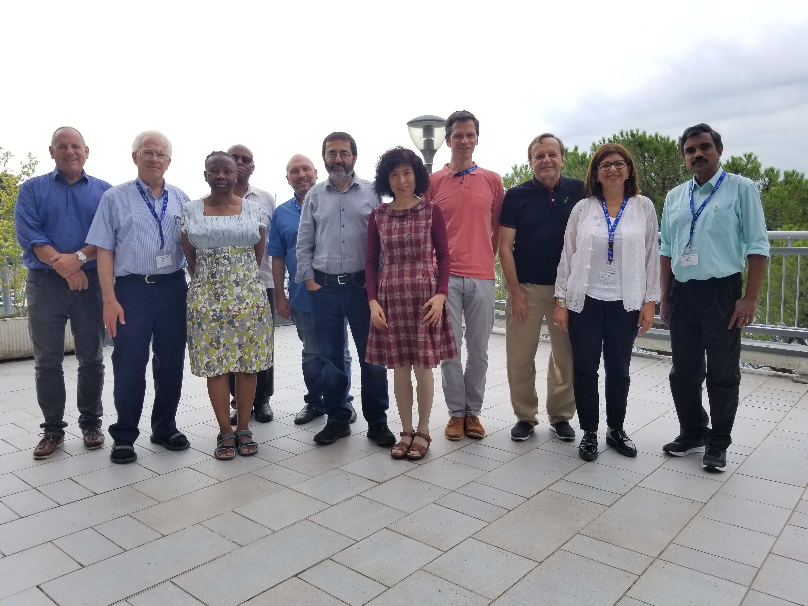

Resources
Experiment is what makes science different from other forms of knowledge, every hypothesis here must be verified by experiment. We need equipment to perform experiments. Lack of equipment is one of the reasons for the backwardness of experiments in science education. However, a large body of knowledge about the design and fabrication of scientific equipment exists in the public domain. There are open instruments applicable to various fields like education and health care. The IUPAP C13 commission attempts to explore this body of knowledge to:
IUPAP C13 Commission Annual Meeting,Aug-2018, Trieste (Left-to-right: Joe Niemela (Sec’y), Michael Steinitz, Mmantsae Diale, Sekazi Mtingwa (Chair), Carlo Iorio, Fernando Quevedo (ICTP Director, Observer), Kuijuan Jin (Vice-Chair), Andreas Buchleitner, François Piuzzi, Samia Charfi Kaddour, Ajith Kumar B.P.
